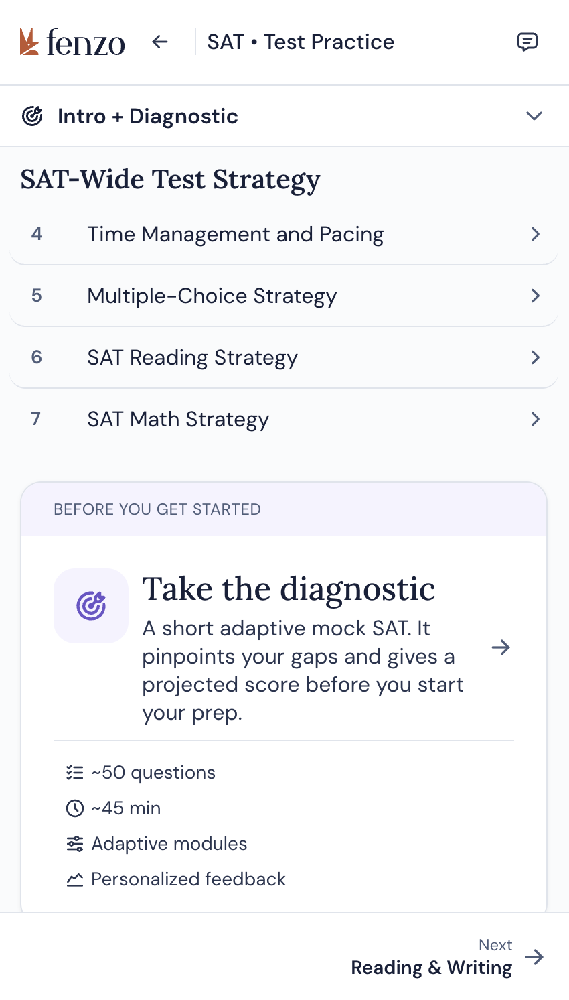
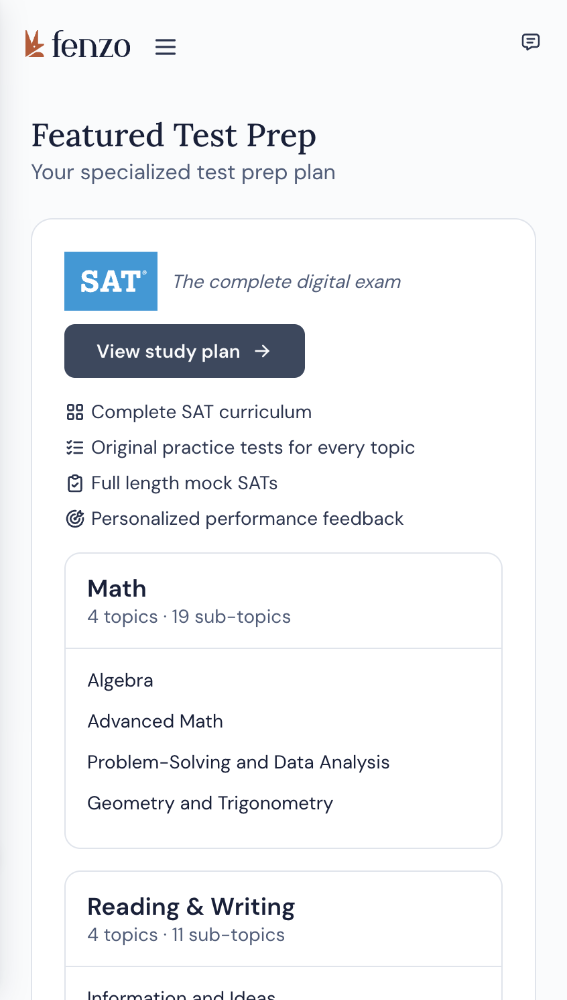

Fenzo Test Practice
OverviewExam prep for tests like the SAT that targets weak areas with personalized primers and finds patterns in mistakes, with granular AI feedback.
- Ideation
- User research
- Competitive analysis
- A/B testing
- AI prototyping
- Iteration
- Audits
- Responsive screens
- Accessibility
- 1k+ purchases in 1st month of launch (success)
- User requests for other specialized exams like GCSE (suggestion)
- Unable to easily locate past test performances (area of improvement)

